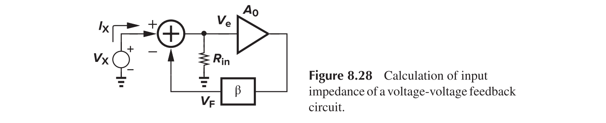

Feedback System Analysis
This article intends to deal with the analysis of feedback systems.
General Consideration
A negative feedback system is as follows
Reorganize the items, we have
$H(s)$ is called the open-loop gain, while $H(s)G(s)$ is called the loop gain, and $Y(s)/X(s)$ is called the closed-loop transfer function. The loop gain can be obtained by
- Set the main input to zero
- Break the loop at some point
- Inject a test signal in the correct direction
- Follow the loop and obtain the value that returns to the break point
- The negative of the transfer function is the loop gain
Assume $H(s)=A, G(s)=\beta$, we have
Thus, for negative-feedback system, as long as $\beta A$ is large enough, the closed loop gain is determined by the feedback coefficient.
- Bandwidth: for one pole gain $A(s)=\frac{A_0}{1+s/\omega_0}$, the transfer function is $Y(s)/X(s)=\frac{A_0/(1+\beta A_0)}{1+s/[(1+\beta A_0)\omega_0]}$, and thus the bandwidth is extended by the loop gain, leaving the GBW unchanged.
- Nonlinearity: reduced
Types of Amplifiers
Corresponding implementation
Sensing and Return Mechanism
Input and Output Impedance
Voltage-Voltage Feedback
For the output impedance
Assume that feedback network draws no current
For the input impedance

Current-Voltage Feedback

For the output impedance
For the input impedance
Voltage-Current Feedback
For the output impedance
For the input impedance
This topology has application in fiber optic receivers, where light is converted to electrical current through a reverse-biased diode. A transimpedance amplifier (TIA) is adopted to convert this current signal into voltage signal.
Current-Current Feedback
For the output impedance
For the input impedance
Limitations of the Simple Analysis
What is loading effect?
The non-ideal input and output impedance of the feedback network could degrade the open-loop gain.
Possible methods
Two Port Models
Z
Y
H
G
Voltage-Voltage Feedback
We have
For that matter, the $A_{v,open}$ should be calculated using the configuration
Summary
To calculate the gain with the loading effect, the procedure is as follows:
- Open the loop with proper loading and calculate the open-loop gain $A_{OL}$
- Determine the feedback ratio $\beta$
- Calculate the closed-loop gain with $A_{OL}/(1+\beta A_{OL})$
Bode's Analysis
Assume $I_1=g_mV_1$, we have
The return ratio (RR) is defined as $-g_mD$.
The procedure
- Disable the transistor and by setting $g_m=0$ and obtain A and C
- Set input to zero and calculate B and D
- Solve the $A_v$ with above equations
Blackman's Theorem
It follows that
If we define two quantities
And therefore
Stability Consideration
Consider again the closed-loop transfer function
If $G(s)H(s)=-1$, the gain goes to infinity. This is the condition of instability, which can be equivalently expressed as
which are called “Barkhausen’s Criteria.” We introduce several notions:
- Gain Crossover Frequency: The frequency when open-loop gain reduces to 1 (0 dB), denoted as GX.
- Phase Crossover Frequency: The frequency when the phase of open-loop gain reduces to $-180^\circ$, denoted as PX.
- Phase Margin: Defined as $180^\circ+\angle\beta H (f=GX)$, denoted as PM.
If $\text{PM}=60^\circ$, we have
There will be negligible frequency peaking.
- Post link: https://triblemany.github.io/archives/b4b2824b/feedback-system-analysis.html
- Copyright Notice: All articles in this blog are licensed under BY-NC-SA unless stating additionally.